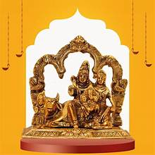
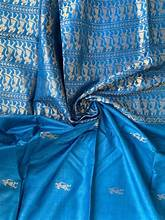
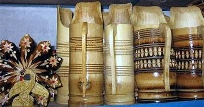
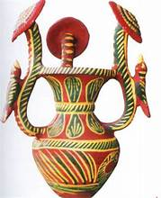

🎨✨ Art and Handicrafts of Bihar – A Celebration of Heritage and Skill 🧵🖌ï¸
🖼️ Madhubani Painting – Colors of Culture

Madhubani Painting ğŸ¨
Traditional folk art practiced in the Mithila region of Bihar.
Characterized by vibrant colors, intricate patterns, and natural themes.
Manjusha Art 🖌️
An ancient art form from Bhagalpur, depicting mythological tales of Bihula-Bishari.
Recognized by its distinct use of geometric patterns and vivid colors.
An ancient art form from Bhagalpur, depicting mythological tales of Bihula-Bishari.
Recognized by its distinct use of geometric patterns and vivid colors.
🧵 Handicrafts – Masterpieces of Bihar’s Artisans

Sikki Grass Craft 🌾
Intricately woven items made from golden-hued sikki grass.
Used to create baskets, trays, and decorative items.
Sujni Embroidery 🧵
Traditional quilt embroidery crafted by rural women.
Combines storytelling through intricate stitching.
Traditional quilt embroidery crafted by rural women.
Combines storytelling through intricate stitching.

Khatwa Appliqué 🌟
Unique appliqué work using cloth cutouts stitched onto fabric.
Predominantly seen in wall hangings and household textiles.
Unique appliqué work using cloth cutouts stitched onto fabric.
Predominantly seen in wall hangings and household textiles.
Lacquer Craft 🌸
Famous for colorful bangles and decorative items made using lac resin.
The vibrant colors and shine make them popular during festivals.
Bamboo and Cane Craft ğŸ‹
Widely used for making household items like baskets, mats, and furniture.
A sustainable craft supporting local artisans.
🪵 Wood and Metal Craft – Sculpting Legacy
Tikuli Art 🎍
A 700-year-old art form using glass and gold foils to create intricate patterns.
Used to make decorative wall hangings and jewelry.


Brass Craft 🔥
Handcrafted brass and metal artifacts from Vaishali and other regions.
Showcases exquisite detailing and finesse.
🧶 Textile Weaving – Threads of Tradition
Bhagalpuri Silk 🌸
Renowned for its elegance and durability.
Crafted in Bhagalpur, the silk city of India.

Kosa Silk 🧣
Handwoven silk with a distinct texture and sheen.
Often used in traditional sarees and attire.
🸠Musical Instruments – Echoes of Bihar
Dholak ğŸ¥
Traditional percussion instrument used in folk music.
Produces rhythmic beats that enhance cultural celebrations.
Bamboo Flute ğŸµ
Crafted with precision by rural artisans.
Adds melody to Bihar’s folk and classical music.
🧺 Eco-Friendly and Sustainable Crafts
Cane and Bamboo Crafts ğŸƒ
Eco-friendly household items crafted using sustainable materials.
Supports environmental balance and empowers local communities.


Leaf Plate Craft ğŸ‚
Plates and containers made from dried leaves.
Used in community feasts and religious offerings.
🖼️ Unique and Lesser-Known Art Forms

Patna Kalam Painting ğŸ¨
A unique style of miniature painting developed during the Mughal period in Patna.
Known for its use of natural colors and intricate detailing of daily life and historical events.
Paper Mâché Craft 🎍
Artistic craft using paper pulp to create decorative masks, figurines, and toys.
Used extensively during Chhau performances and religious ceremonies.

🺠Stone, Clay, and Terracotta Craft
Gaya Stone Carving ⛏️
Exquisite carvings on stone found in the Gaya region, depicting Buddhist motifs and religious symbols.
Used in creating temple sculptures and ritual artifacts.
Stone and Clay Pottery 🪵
Traditional pottery techniques that produce earthenware and terracotta idols.
Used in household items and religious offerings.
Terracotta Craft ğŸº
Clay-based art, creating figurines, lamps, and vessels.
Associated with cultural festivals and rituals.

🔔 Metal Crafts – Artistic Refinement
Bell Metal Craft 🔔
Exquisite metalwork used in creating utensils and ritualistic items.
Famous for its durability and intricate designs.
Brass and Copper Utensils ⚱️
Traditionally handcrafted utensils and ritual vessels.
Known for their aesthetic appeal and longevity.
🧵 Weaving, Textiles, and Eco-Friendly Craft
Bawan Buti Weaving 🌾
Ancient weaving technique that uses 52 distinct motifs in a saree.
Associated with the Bhagalpur silk tradition.
Dari Weaving 🧶
Traditional handwoven mats and rugs crafted from cotton and jute.
Popular in rural Bihar for home décor.
Jute Craft 🎍
Environmentally friendly craft producing bags, mats, and decorative items.
A sustainable livelihood for rural artisans.